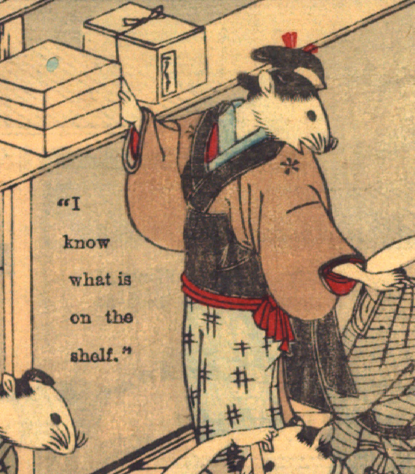

女の鼠。髪を結い、赤い簪をさしている。茶色の着物と水色の前掛けを身につけている。立って、棚の上の箱に右手をかけ、振り返って、向って右側の鼠の肩に左手を置いて話しかけている。手は人間のものである。
著作者：David Thompson／出典：親書誌：U426_nichibunken_0112：Nedzumi no Yome-Iri／日付：2006／資源識別子：U426_nichibunken_0112_0007_0005
Copyright (c)2010- International Research Center for Japanese Studies, Kyoto, Japan. All rights reserved.